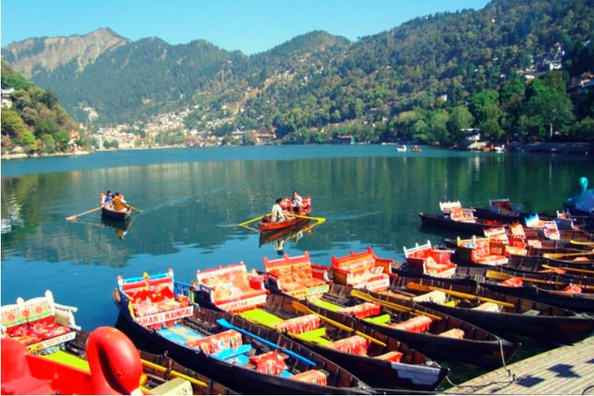

Gulmarg
Boasting the scenic beauty of the ever-wonderful Jammu and Kashmir, Gulmarg stands on a different level among all the hill stations in North India. This beautiful hill station in India is the most sought-after place among all the travellers in India and abroad as well. Set at an altitude of 2,730m, Gulmarg is a hill town that is engulfed by deep ravines, meadows, snow-capped peaks, lush hills and serene valleys.
Manali
Regarded to be one of the best hill stations in India, Manali is a heaven for all the snow lovers. With delicate temperatures during the summers, and chilling weather during the winters, Manali is one of the peaceful places to visit in North India. There are many things to do in Manali, which is fondly known as the Valley of the Gods. Whether you are an adventure and sports enthusiast or love calm and tranquil surroundings, Manali has something for everyone.
Shimla

Set against oak, deodar and pine forests, Shimla makes for one fascinating sight! While you are there, you can check out the Chadwick Falls, The Ridge, Mall Road, Christ Church and Jaku Hill. Shimla tourism is always at an all time high so you get to know about the best attractions and places to stay no matter when you plan to visit.
Nanital

- Nainital is a heaven on earth
- Well recognised as the Lake District of India, it is one of the best places to beat the heat in the scorching summer.
- With ancient temples and jaw dropping sceneries to its credit, you can also check out the Jim Corbett National Park which is the oldest national park in India
- And indulge in exploring caves and boating activities.
Kasol
- The ideal backpacker’s destination, Kasol is a suburb set on the banks of the river Parvati.
- There are many places to visit in Kasol such as the Malana Village, Parvati River and Tirthan Valley
- You can also choose to sip a cuppa and laze around in this secluded heaven.
Gemini Solutions

Visit Gemini Solutions Website